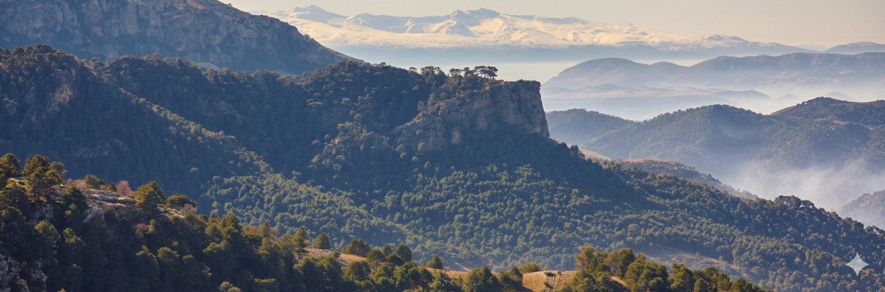
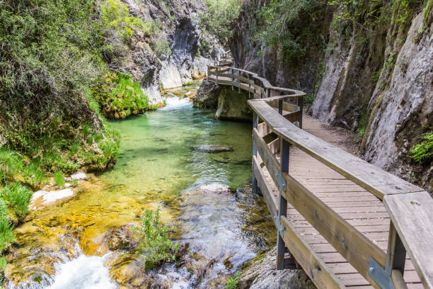
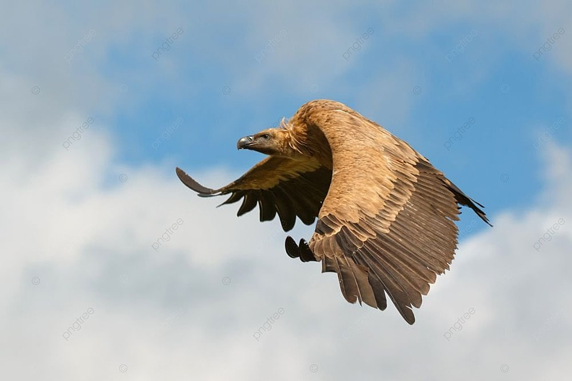
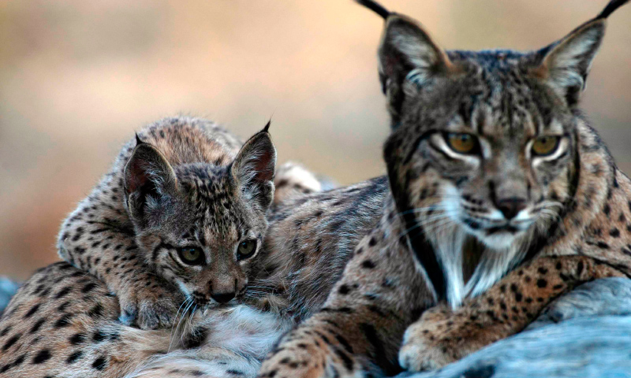
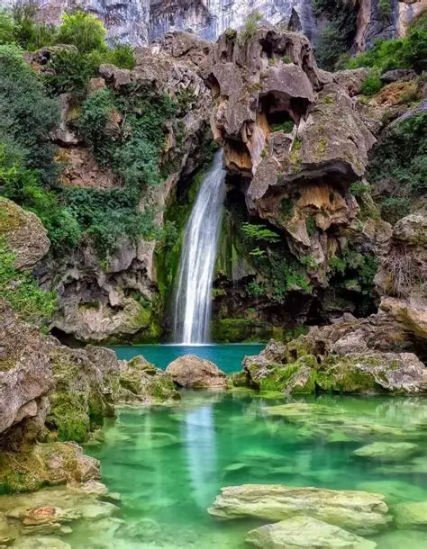
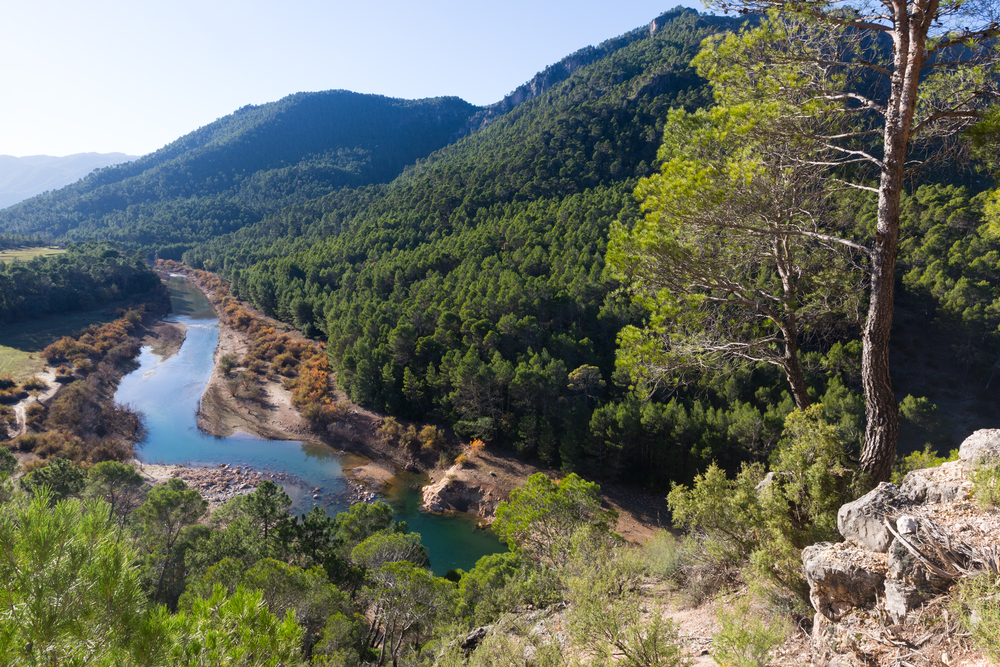
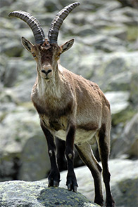

Bienvenidos a nuestra galería fotográfica, donde podrás explorar la belleza natural del Parque Natural de la Sierra de Cazorla a través de impresionantes imágenes que capturan su flora, fauna y paisajes únicos. En esta sección, encontrarás una colección de fotografías que muestran la diversidad de especies que habitan en el parque, desde majestuosos buitres leonados hasta el esquivo lince ibérico. Además, podrás admirar los impresionantes paisajes montañosos, los frondosos bosques y las cristalinas aguas de sus ríos y cascadas.






Visita el parque y descubre más sobre su flora y fauna respetando el entorno natural.